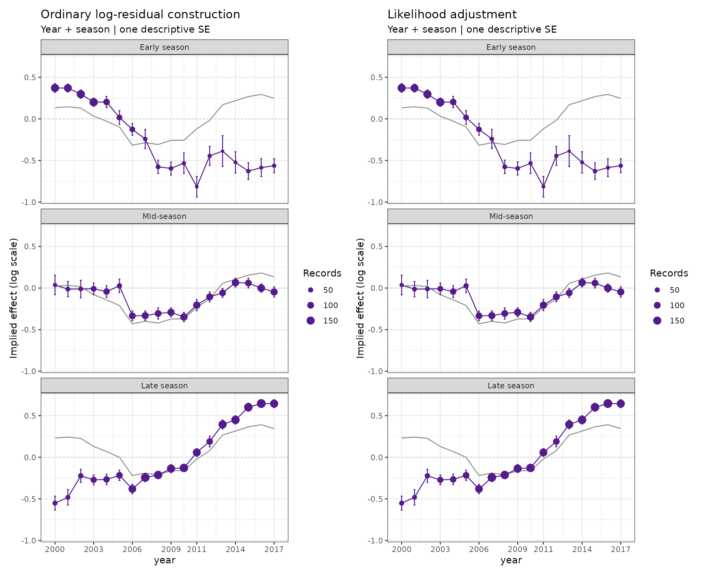
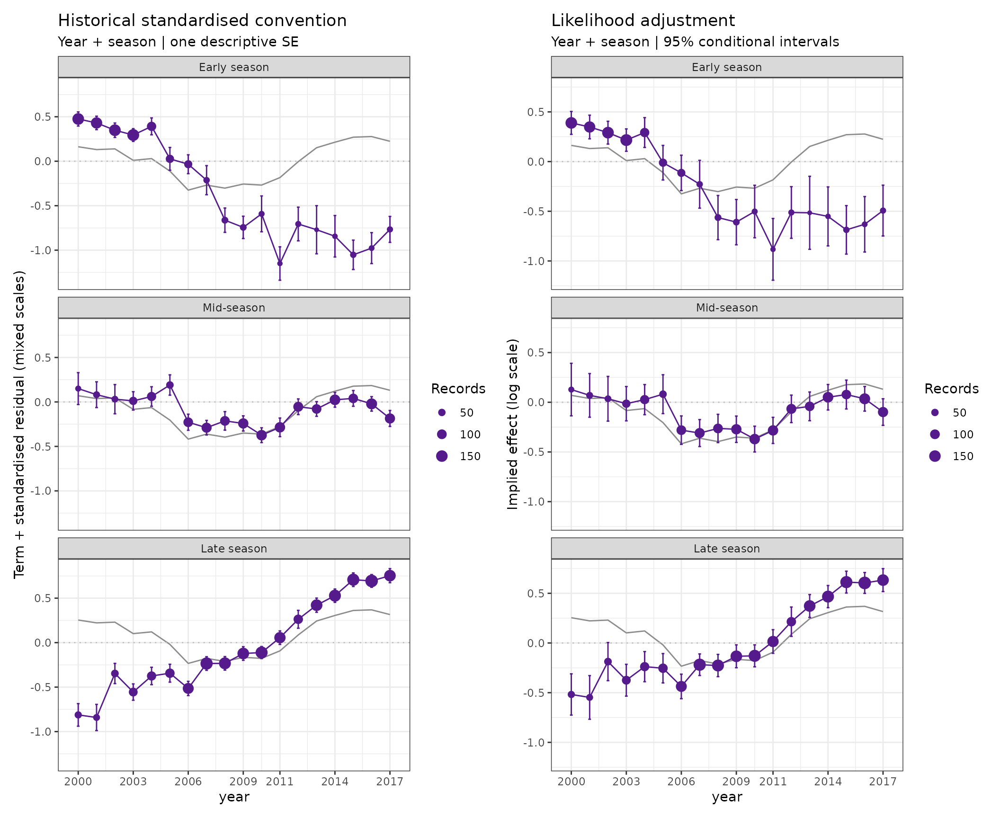
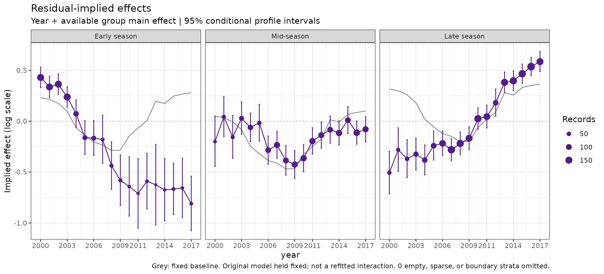
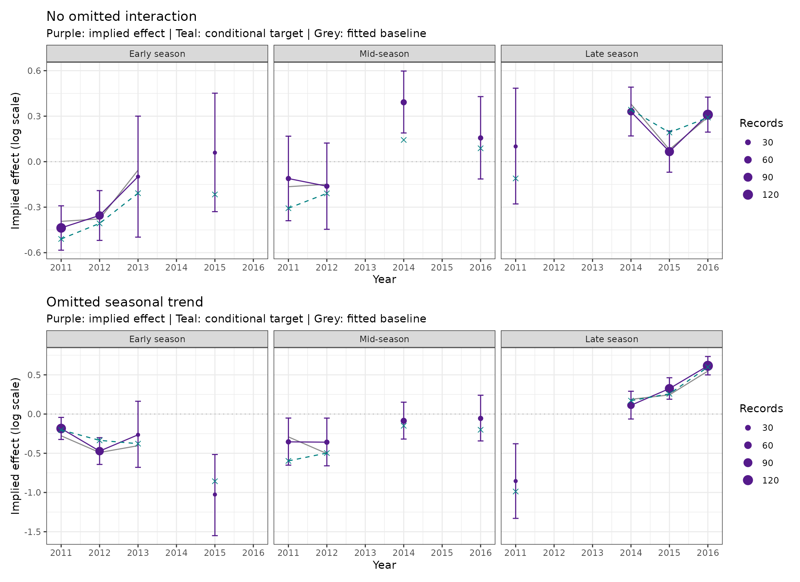
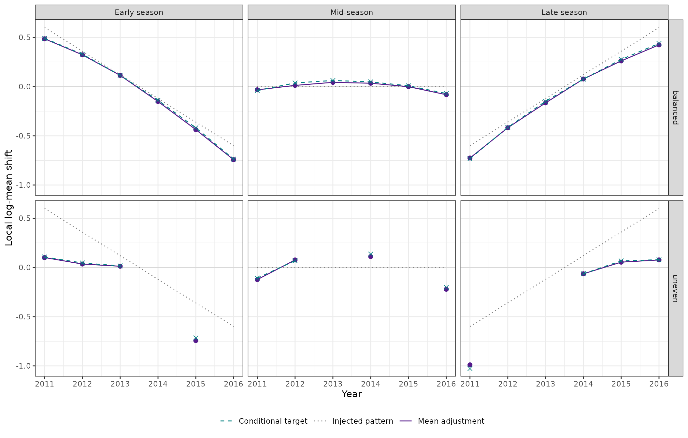
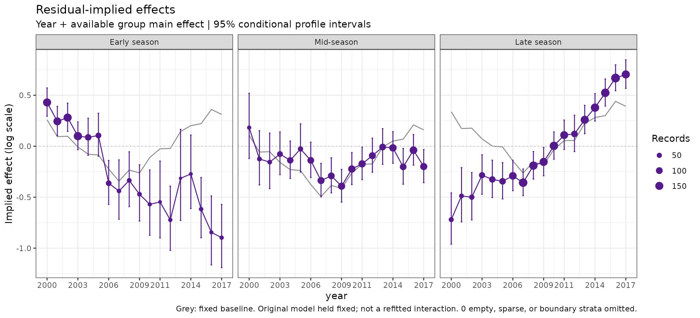

Restore the original question
Residual-implied plots ask whether individual groups suggest a different annual trajectory from the fitted model. The original comparison is useful: show a common fitted annual pattern, then show how residual departures in each group would adjust that pattern. These are exploratory implied effects, not separately fitted interactions or regional abundance indices.
plot_implied_residuals() now defaults to a local
likelihood adjustment. The original model’s parameters,
fitted random effects, smooths, dispersion, and exposure offsets stay
fixed. Only one additional effect-scale shift is estimated in each
supported group-year stratum. For a supported log-link model, that shift
multiplies the expected response, while respecting the fitted response
distribution. No full model is refitted and no MCMC is run.
The zero-centred PIT summaries previously displayed under this name
are now available as plot_grouped_residuals(). That
calculation has not changed. It answers a different question: whether a
group’s observations tend to lie high or low within their predictive
distributions. Normal-score PIT residuals are not added to model
coefficients.
Three conventions, explicitly distinguished
| Calculation | Adjustment added to the selected fitted baseline | Interpretation |
|---|---|---|
method = "likelihood" |
Local shift maximising the fitted response likelihood | Default effect-scale diagnostic |
method = "traditional" |
Mean ordinary log-response residual | Classical lognormal construction; constant log variance required |
Traditional with
traditional_scale = "standardised"
|
Mean globally centred rstandard()
residual |
Actual historical analyser GLM convention; retained for comparison, not a universal effect-scale calculation |
The historical
analyser source uses rstandard() for GLMs, centres
those residuals globally, and adds selected fitted term contributions.
Its implieds() helper can include the group main effect as
well as year. Thus “traditional” was not one universal residual
definition. Fisheries examples include Starr and
Kendrick (2019) and Middleton (2025).
An example by Adam Langley is Langley (2018): Figure 15 (p. 18) compares depth-specific annual residual-implied coefficients with the overall lognormal CPUE index, while Figures A5–A7 (pp. 55–57) show the same diagnostic question for months, target species, and vessels. The latter captions identify the intervals as standard errors of annual residuals. These are examples of the historical diagnostic, not validation of influ2’s new likelihood adjustments or profile intervals for other response families.
The new calculation agrees with ordinary log-residual arithmetic when the variance is constant; it does not generally equal the historical standardised-residual arithmetic. The examples below demonstrate both claims.
The baseline defaults to "year_group": centred fixed
year and group main effects, where the latter is present. Choose
baseline = "year" for only the shared year term. All
selected term contributions are centred over the same fitted
observations. They are not independently re-centred in each panel. Other
covariate effects, random effects, and smooths stay in the observation
predictions used to calculate the adjustment, but are not added to this
baseline.
A simulated lobster design with differing group trends
We retain the uneven year/month coverage, depth, and soak time from
lobsters_per_pot, but simulate new responses for this
comparison. These are not modifications to the package dataset. Three
seasonal groups are defined from month, and their trends intentionally
differ. Vessel effects add repeated-observation structure. Both
responses represent CPUE per standardised sampling unit: one continuous
positive response and one count response.
data(lobsters_per_pot)
example <- lobsters_per_pot
example$season <- factor(ceiling(as.integer(example$month) / 4),
labels = c("Early season", "Mid-season", "Late season"))
set.seed(12092026)
example$vessel <- factor(sample(1:24, nrow(example), replace = TRUE))
time <- as.integer(example$year)
trend <- time - mean(time)
vessel_effect <- rnorm(24, sd = .35)
eta <- 1.5 + .15 * sin(time / 2) - .015 * (example$depth - 40) +
.008 * (example$soak - 30) + .15 * (as.integer(example$season) - 2) +
.07 * trend * (as.integer(example$season) - 2) +
vessel_effect[as.integer(example$vessel)]
example$cpue_positive <- exp(eta + rnorm(nrow(example), sd = .6))
example$count_cpue <- rnbinom(nrow(example), mu = exp(eta), size = 4)Constant log variance: matching the classical construction
Fit a Gaussian model to log CPUE, omitting the generating season-by-year interaction. This is a lognormal response model with constant log-scale variance, not a Gaussian model fitted directly to untransformed CPUE.
log_fit <- glmmTMB::glmmTMB(
log(cpue_positive) ~ year + season + depth + soak + (1 | vessel),
family = gaussian(), data = example
)
new_log <- implied_effects(log_fit, groups = "season", interval = "descriptive")
traditional_log <- implied_effects(log_fit, groups = "season", method = "traditional")
max(abs(new_log$table$estimate - traditional_log$table$estimate))
#> [1] 1.110223e-16
stopifnot(isTRUE(all.equal(new_log$table, traditional_log$table, tolerance = 1e-10)))The estimates agree because the conditional Gaussian likelihood shift is the mean log-response residual when the variance is constant. Here we deliberately use the same descriptive one-SE bars for both displays, so the whole plotted table agrees. Those bars are not full fitted-model uncertainty intervals.
patchwork::wrap_plots(
plot(traditional_log, ncol = 1) + labs(title = "Ordinary log-residual construction",
subtitle = "Year + season | one descriptive SE", caption = NULL),
plot(new_log, ncol = 1) + labs(title = "Likelihood adjustment",
subtitle = "Year + season | one descriptive SE", caption = NULL), ncol = 2
)
Ordinary log-residual implied effects (left) and the new likelihood-based effects (right) for the same Gaussian log-CPUE glmmTMB fit. Both use the same year-plus-season baseline, fitted vessel effects, and descriptive one-SE bars. Points, trajectories, and bars agree numerically to 1e-10. Grey lines are fixed baseline contributions, not independently fitted seasonal indices. The deliberately omitted seasonal trend is visible as departures from those baselines.
The optional glmmTMB examples are skipped if that
package is unavailable. This equality is not a promise that every
lognormal parameterisation behaves identically. For example, glmmTMB’s
directly specified lognormal() family models mean and SD on
the response scale: holding that SD fixed is different from holding
log-scale SD fixed. This first implied-effect implementation therefore
supports the explicit Gaussian-log-response route, not an automatic
conversion of directly parameterised lognormal models.
Reproduce the actual historical standardised-residual recipe
For a direct source comparison, fit a plain Gaussian GLM to log CPUE:
that is one of the classes handled by the historical
Diagnoser. Both methods below use this
same GLM. This comparison does not contrast a
fixed-effect fit with a mixed model.
historical_fit <- glm(log(cpue_positive) ~ year + season + depth + soak,
family = gaussian(), data = example)
historical <- implied_effects(historical_fit, groups = "season",
method = "traditional", traditional_scale = "standardised")
modern <- implied_effects(historical_fit, groups = "season")
# Independent reconstruction of the historical GLM arithmetic.
term_effects <- predict(historical_fit, type = "terms")
reference <- rowSums(term_effects[, c("year", "season")])
standardised <- rstandard(historical_fit)
standardised <- standardised - mean(standardised)
manual <- do.call(rbind, lapply(seq_len(nrow(historical$table)), function(j) {
cell <- historical$table[j, ]
keep <- example$year == cell$level & example$season == cell$group
data.frame(estimate = mean(reference[keep] + standardised[keep]),
std_error = sd(standardised[keep]) / sqrt(sum(keep)))
}))
max(abs(manual$estimate - historical$table$estimate))
#> [1] 2.220446e-16
stopifnot(isTRUE(all.equal(manual$estimate, historical$table$estimate, tolerance = 1e-10)))
stopifnot(isTRUE(all.equal(manual$std_error, historical$table$std_error, tolerance = 1e-10)))
patchwork::wrap_plots(
plot(historical, ncol = 1) + labs(title = "Historical standardised convention",
subtitle = "Year + season | one descriptive SE", caption = NULL),
plot(modern, ncol = 1) + labs(title = "Likelihood adjustment",
subtitle = "Year + season | 95% conditional intervals", caption = NULL), ncol = 2
)
Actual historical analyser GLM convention (left) versus the new likelihood-based implied effects (right), using the same Gaussian log-CPUE GLM and baseline. Left: globally centred rstandard residuals added to term contributions, with descriptive one-SE bars. Right: local log-scale likelihood shifts, with 95% conditional profile-likelihood intervals. Unlike the preceding ordinary-log-residual comparison, these points and bars need not agree: both the residual scale and interval definition differ. The standardised convention is retained as a labelled historical comparison, not a physically interpretable CPUE multiplier.
This reproduces the source’s GLM arithmetic, not every version of earlier influ2 or every fisheries report. In particular, it does not revive the old brms posterior-array helper or infer what every report meant by “standardised”.
Negative-binomial implied effects
For an NB2 log-link model, the local shift maximises the
negative-binomial likelihood using the fitted size/dispersion. It is not
the average of PIT scores or a renamed Pearson residual. Within a
stratum, adding delta to the linear predictor multiplies all its fitted
means by exp(delta).
nb_fit <- glmmTMB::glmmTMB(
count_cpue ~ year + season + depth + soak + (1 | vessel),
family = glmmTMB::nbinom2(), data = example
)
nb_implied <- implied_effects(nb_fit, groups = "season")
head(as.data.frame(nb_implied))
#> level group n baseline adjustment estimate std_error
#> 1 2000 Early season 153 0.23187481 0.19752139 0.42939619 0.05137036
#> 2 2001 Early season 143 0.21491937 0.12104052 0.33595989 0.05376133
#> 3 2002 Early season 154 0.17412683 0.18936487 0.36349170 0.05169645
#> 4 2003 Early season 160 0.09752318 0.13935836 0.23688154 0.05120520
#> 5 2004 Early season 90 -0.06401734 0.13669553 0.07267819 0.06914226
#> 6 2005 Early season 67 -0.13942674 -0.02277379 -0.16220053 0.08505896
#> lower upper status
#> 1 0.32965956 0.53107330 ok
#> 2 0.23156150 0.44235353 ok
#> 3 0.26307818 0.46577048 ok
#> 4 0.13736603 0.33813090 ok
#> 5 -0.06142452 0.20971571 ok
#> 6 -0.32754176 0.00607398 ok
plot_implied_residuals(nb_implied)
New likelihood-based residual-implied effects for the NB2 glmmTMB count-CPUE model, holding fitted vessel effects, dispersion, and all original coefficients fixed. Grey lines show centred year-plus-season contributions; purple trajectories add one local log-mean adjustment per season-year cell. Bars are 95% conditional profile-likelihood intervals for those adjustments, not uncertainty intervals for fully refitted interactions. Point area represents sample size. No response simulations or MCMC are used.
For routine use, the shortcut computes the same default result:
plot_implied_residuals(nb_fit, groups = "season")
plot_implied_residuals(log_fit, groups = "season", method = "traditional")Keeping nb_implied separates calculation from styling
and supports save/reload without the model. Its table retains sparse,
empty, and boundary cells with explicit statuses. Lines never bridge
omitted cells. For an all-zero count cell, the likelihood optimum is a
zero mean (log shift -Inf); the table flags that boundary
and the plot omits the non-finite point, rather than inventing a finite
value by adding a pseudocount.
Simulation check: what do these implied effects recover?
The IV01 follow-up checks this question in 400
simulated NB2 glmmTMB fits: 100 independent datasets for each
combination of balanced/uneven sampling and no interaction/an omitted
year-by-season trend. Each dataset has six years, three seasons, 12
vessel random intercepts, and 648 observations. Balanced cells each
contain 36 observations; the uneven design contains one empty cell, five
cells below min_n = 10, and 12 supported cells. Thus the
comparison changes coverage, not total sample size. The generating size
is 4, vessel SD is 0.4, and the largest injected log-mean shift is
0.6.
Every fit retains year, season, depth, and vessel effects, but not their year-by-season interaction. No failed fit is replaced. The fixed protocol and reproduction scripts record the design, seed schedule, source hashes, and independent numerical checks. This article reads a frozen compact result: it does not refit the 400 models, and neither does the package test suite.
validation <- readRDS(system.file("extdata", "implied-validation.rds", package = "influ2"))
knitr::kable(validation$fit_summary[, c("sampling", "signal", "attempted",
"eligible", "errors", "warnings")],
col.names = c("Sampling", "Interaction", "Attempted", "Eligible", "Errors", "Warnings"))| Sampling | Interaction | Attempted | Eligible | Errors | Warnings | |
|---|---|---|---|---|---|---|
| balanced.null | balanced | null | 100 | 100 | 0 | 0 |
| balanced.trend | balanced | trend | 100 | 100 | 0 | 0 |
| uneven.null | uneven | null | 100 | 100 | 0 | 0 |
| uneven.trend | uneven | trend | 100 | 100 | 0 | 0 |
All 400 fits were eligible, and all 800 calculations (two routes per fit) succeeded without warnings. Empty and sparse cells remained explicit; no all-zero boundary cells occurred in this run. Separate deterministic tests exercise that boundary behaviour.
Separate the injected pattern from the fitted-conditional target
There are two checks on each dataset:
- Known-parameter control: fix the true additive predictor, realised vessel effects, and size. The injected shift is then exactly the quantity the local likelihood is estimating.
-
Fitted-model calculation: use the public
implied_effects()result from the fitted model. Its main effects and dispersion can absorb some omitted structure. The appropriate local target is the shift maximising expected likelihood under the generating response distribution, with that fitted predictor and size held fixed.
For the second route, an independent one-dimensional optimisation obtains the target from the known generating means. Equivalently, its expected score is zero:
That target depends on the fitted data. Its interval containment is not ordinary confidence coverage for a fixed population interaction, and adding the displayed baseline does not propagate uncertainty in that baseline.
The following example is production replicate 1: the first dataset with all four fits and calculations eligible, selected before inspecting its curves. The teal marks are conditional targets added to the same fitted baseline, not independently centred true annual indices.
example_plots <- lapply(c("null", "trend"), function(signal) {
case <- validation$examples$cases[[paste0("uneven:", signal)]]
p <- plot(case$result)
shown <- p$data[p$data$status == "ok", ]
key <- function(d) paste(d$level, d$group, sep = ":")
shown$target <- case$truth$target[match(key(shown), key(case$truth))]
p + geom_line(data = shown, aes(y = baseline + target),
colour = "#008080", linetype = 2) +
geom_point(data = shown, aes(y = baseline + target),
colour = "#008080", shape = 4, size = 2) +
labs(title = if (signal == "null") "No omitted interaction" else "Omitted seasonal trend",
subtitle = "Purple: implied effect | Teal: conditional target | Grey: fitted baseline",
caption = NULL, x = "Year")
})
patchwork::wrap_plots(example_plots, ncol = 1)
Frozen IV01 uneven-sampling example: no omitted interaction (top) and an omitted seasonal trend (bottom). Purple points and lines are the public residual-implied effects, with 95% conditional profile intervals; grey lines are their fixed fitted baselines. Teal dashed lines and crosses add the independently calculated expected-likelihood target to the same baseline. Each dataset has 648 observations, but one empty and five sparse cells are omitted, with no lines spanning gaps. Replicate 1 was selected before visual inspection. These are local implied effects, not refitted interactions or regional indices.
Interval behaviour, without turning the plot into a significance test
The table gives percentages, with one Monte Carlo standard error in parentheses. Summaries first average over supported cells within each dataset, then over 100 independent datasets. Monte Carlo errors use variation between datasets; they do not treat the cells within a fitted model as independent replicates.
rates <- validation$summary
percentage <- function(value, se) sprintf("%.1f (%.1f)", 100 * value, 100 * se)
knitr::kable(data.frame(
Sampling = rates$sampling, Interaction = rates$signal,
Route = ifelse(rates$route == "known_parameters", "Known parameters", "Fitted model"),
`Target in interval (%)` = percentage(rates$containment, rates$containment_mcse),
`Cells excluding zero (%)` = percentage(rates$zero_exclusion, rates$zero_exclusion_mcse),
`Datasets with any exclusion (%)` = percentage(rates$any_zero_exclusion, rates$any_zero_exclusion_mcse),
check.names = FALSE))| Sampling | Interaction | Route | Target in interval (%) | Cells excluding zero (%) | Datasets with any exclusion (%) |
|---|---|---|---|---|---|
| balanced | null | Fitted model | 94.2 (0.5) | 0.9 (0.3) | 12.0 (3.3) |
| balanced | null | Known parameters | 94.4 (0.5) | 5.6 (0.5) | 65.0 (4.8) |
| balanced | trend | Fitted model | 96.4 (0.4) | 42.8 (0.6) | 100.0 (0.0) |
| balanced | trend | Known parameters | 95.0 (0.5) | 47.7 (0.6) | 100.0 (0.0) |
| uneven | null | Fitted model | 94.2 (0.7) | 0.8 (0.3) | 9.0 (2.9) |
| uneven | null | Known parameters | 94.5 (0.7) | 5.5 (0.7) | 49.0 (5.0) |
| uneven | trend | Fitted model | 95.7 (0.5) | 19.5 (0.6) | 100.0 (0.0) |
| uneven | trend | Known parameters | 95.0 (0.6) | 47.2 (0.8) | 100.0 (0.0) |
Under known parameters, pointwise coverage was 94.4–95.0%, close to the nominal 95% in these cases. Fitted-conditional target containment was 94.2–96.4%, but that is a different, data-dependent target. Under the null, only about 0.8–0.9% of fitted-model cell intervals excluded zero, and 9–12% of datasets had at least one exclusion. By contrast, the known-parameter control had a zero exclusion somewhere in 49–65% of null datasets: many pointwise checks are not a simultaneous test. Neither route provides a calibrated whole-model test of a missing interaction.
Uneven sampling changes what remains for the diagnostic to detect
The next figure compares the average local adjustment and its appropriate conditional target with the raw injected pattern. It shows all seasons, including the middle season with no injected trend. Missing/sparse cells have no diagnostic estimate; an input truth curve does not fill those gaps.
recovery <- subset(validation$cell_summary, signal == "trend" & route == "fitted_model")
recovery$year <- as.integer(recovery$level)
recovery$group <- factor(recovery$group, levels = validation$metadata$settings$seasons)
recovery <- recovery[order(recovery$sampling, recovery$group, recovery$year), ]
recovery$segment <- cumsum(c(TRUE, diff(recovery$year) != 1L |
head(recovery$group, -1) != tail(recovery$group, -1) |
head(recovery$sampling, -1) != tail(recovery$sampling, -1) |
head(recovery$usable, -1) == 0 | tail(recovery$usable, -1) == 0))
supported <- subset(recovery, usable > 0)
ggplot(recovery, aes(year)) +
geom_hline(yintercept = 0, colour = "grey85") +
geom_line(aes(y = injected, colour = "Injected pattern", linetype = "Injected pattern")) +
geom_line(data = supported, aes(y = adjustment, group = segment,
colour = "Mean adjustment", linetype = "Mean adjustment")) +
geom_point(data = supported, aes(y = adjustment), colour = "purple4", size = 2) +
geom_line(data = supported, aes(y = target, group = segment,
colour = "Conditional target", linetype = "Conditional target")) +
geom_point(data = supported, aes(y = target), colour = "#008080", shape = 4, size = 2) +
facet_grid(sampling ~ group) +
scale_colour_manual(values = c("Injected pattern" = "grey50",
"Mean adjustment" = "purple4", "Conditional target" = "#008080")) +
scale_linetype_manual(values = c("Injected pattern" = 3,
"Mean adjustment" = 1, "Conditional target" = 2)) +
scale_x_continuous(breaks = 2011:2016) +
labs(x = "Year", y = "Local log-mean shift", colour = NULL, linetype = NULL) +
theme(legend.position = "bottom")
IV01 omitted-trend cases, averaged over 100 independent datasets per sampling design. Purple points and solid lines show average fitted-model local log-mean adjustments; teal crosses and dashed lines show average fitted-conditional expected-likelihood targets; grey dotted lines show the raw injected seasonal pattern. Top: balanced sampling; bottom: uneven sampling with the same total observations. Unsupported cells have no purple or teal estimate, and those lines do not bridge gaps. Fitted main effects and nuisance parameters absorb more of the injected pattern under uneven sampling, so raw interaction recovery is not the same estimand as the local conditional adjustment. These are mean curves, not confidence bands.
Across the two signal scenarios, the mean within-dataset RMSE around the fitted-conditional target was 0.118 and 0.139 log units for balanced and uneven sampling. The corresponding target-versus-injected-pattern RMSE was 0.107 and 0.317. Thus the attenuated uneven-sampling display is not evidence that the local optimiser lost the signal: much of it has already entered the fitted baseline or other parameters. Mean fitted NB2 size fell from 4.18/4.20 in the null cases to 2.79/3.47 in the trend cases; omitted structure was also accommodated by greater estimated overdispersion.
For supported cells with pre-specified absolute injected shift at least 0.3, the fitted adjustments recovered the injected direction 100.0% and 98.3% of the time, but their intervals excluded zero only 92.5% and 32.8% of the time, respectively. These are descriptive results at one effect size, not a general power calculation. The supported strong cells differ between designs, and the six unsupported uneven cells cannot contribute evidence.
widths <- subset(validation$cell_summary, signal == "trend" & route == "fitted_model")
width_summary <- aggregate(width ~ sampling + n, widths, mean)
knitr::kable(width_summary, digits = 3,
col.names = c("Sampling", "Observations per supported cell", "Mean conditional interval width (log units)"))| Sampling | Observations per supported cell | Mean conditional interval width (log units) |
|---|---|---|
| uneven | 12 | 0.910 |
| uneven | 24 | 0.594 |
| balanced | 36 | 0.514 |
| uneven | 36 | 0.454 |
| uneven | 60 | 0.333 |
| uneven | 80 | 0.318 |
| uneven | 96 | 0.263 |
| uneven | 108 | 0.269 |
| uneven | 120 | 0.222 |
Small supported cells generally have wider intervals. Empty and sparse cells are intentionally absent from the width table, not assigned zero width. Larger record counts do not by themselves validate ignoring uncertainty in estimated vessel effects or other fitted parameters.
Positive CPUE: Gamma with a log link
Gamma(log) fits use the same effect-scale question, without treating
continuous CPUE as a count or adding dimensionless PIT scores to
coefficients. Write the original fitted mean as mu_i, and
the native fitted scale as phi_i, so that the variance is
phi_i * mu_i^2 and the shape is
k_i = 1 / phi_i. The local adjustment is
For a constant fitted scale, this simplifies to
log(mean(response / fitted_mean)). Thus
exp(adjustment) = 1.5 suggests a 50% upward adjustment
relative to the original predictions in that cell. It is not a
separately estimated regional CPUE index. The plotted trajectory is the
centred fixed baseline plus this adjustment, not the
adjustment alone.
The GAM adapter retains sig2.
The GLM adapter uses summary(fit)$dispersion. glmmTMB’s
native Gamma dispersion
prediction is 1 / sqrt(shape), so influ2 squares it to
obtain phi. No alternative shape estimate is fitted. The
conditional intervals solve the Gamma likelihood-ratio equation with
these original scales held fixed; they are asymmetric on the log-effect
scale.
This small GAM example deliberately leaves differing seasonal trends out of the fitted model. It includes a smooth, a vessel effect, an effort offset, and an additional estimated effort slope, all retained in the predictions.
set.seed(821)
example$log_effort <- log(example$soak / mean(example$soak))
example$gamma_cpue <- rgamma(nrow(example), shape = 1.4,
scale = exp(eta + 1.3 * example$log_effort) / 1.4)
gamma_fit <- mgcv::gam(gamma_cpue ~ year + season + s(depth, k = 5) +
s(vessel, bs = "re") + log_effort + offset(log_effort),
family = Gamma(link = "log"), method = "REML", data = example)
gamma_implied <- implied_effects(gamma_fit, groups = "season")
head(as.data.frame(gamma_implied))
#> level group n baseline adjustment estimate std_error
#> 1 2000 Early season 153 0.258691817 0.1704350 0.42912679 0.07097604
#> 2 2001 Early season 143 0.094065712 0.1496641 0.24372981 0.07341578
#> 3 2002 Early season 154 0.097604420 0.1830004 0.28060481 0.07074522
#> 4 2003 Early season 160 -0.007255446 0.1059896 0.09873419 0.06940607
#> 5 2004 Early season 90 -0.078192613 0.1650387 0.08684613 0.09254143
#> 6 2005 Early season 67 -0.086668992 0.1917475 0.10507850 0.10725562
#> lower upper status
#> 1 0.29316820 0.5715387 ok
#> 2 0.10320716 0.3911573 ok
#> 3 0.14507837 0.4225427 ok
#> 4 -0.03428370 0.2379230 ok
#> 5 -0.08921054 0.2738768 ok
#> 6 -0.09802436 0.3229262 ok
plot(gamma_implied)
Gamma(log) residual-implied effects for simulated positive CPUE. Grey lines show the centred fixed year-plus-season baseline; purple trajectories add the local Gamma likelihood adjustment. Bars are 95% conditional profile-likelihood intervals, holding the original coefficients, smooths, vessel effects, offsets, and native fitted scale fixed. They exclude uncertainty in the original fit and residual dependence. Point area represents sample size; no response simulation or model refitting is needed to calculate these diagnostics.
The Gamma arithmetic is tested against independent
dgamma() optimisation and profile endpoints, including
unequal fixed scales. Tests also check response-unit invariance,
missing-year gaps, sparse cells, row alignment, and saved-result
plotting. This is numerical validation, not a
simulation calibration of Gamma interval coverage. The NB2 study above
does not supply that calibration. Strictly positive responses and a log
link are required. An entire joint delta model is not silently replaced
by its positive Gamma component.
Interpretation, uncertainty, and scope
The current adapters support lm, GLM, GAM, and ML
glmmTMB for Gaussian identity-link, Poisson log-link, NB2 log-link, and
Gamma log-link models. Fitted GAM smooths and mixed-model effects stay
fixed. Traditional comparison is restricted to constant-variance
Gaussian models of log(response); the historical
standardised option additionally requires a plain GLM.
Conditional profile intervals ignore uncertainty in the original model, its baseline, and its estimated latent effects. Descriptive one-SE bars also ignore dependence. Neither should be read as full uncertainty in a regional index or an interaction. A suitable refit/bootstrap or explicitly defined posterior propagation would be a further development, not something these bars already provide.
Other families, direct lognormal parameterisations, brms, sdmTMB, tinyVAST, non-unit weights, and year interactions currently fail explicitly for this new implied-effect calculation. They remain supported where documented by the existing PIT diagnostics and other influ2 functions. Joint hurdle/delta models require separate decisions about encounter, positive-response, and combined-response shifts; a positive-component calculation is never silently substituted for a combined-response diagnostic.
The tests independently reconstruct the historical recipe, check log-response agreement, compare NB2 and Gamma shifts and profile endpoints with native density calculations, and cover offsets, fitted random effects, GAMs, row alignment, unsupported cases, and compact save/reload. This validates the implemented arithmetic, not universal scientific calibration of implied-effect intervals. IV01 adds bounded empirical evidence for NB2 glmmTMB only: one effect size, two fixed sampling designs, and 100 datasets per scenario. It does not calibrate Gamma intervals, validate binomial, spatial, Bayesian, or combined two-part implied effects, nor calibrate these plots as formal significance tests.